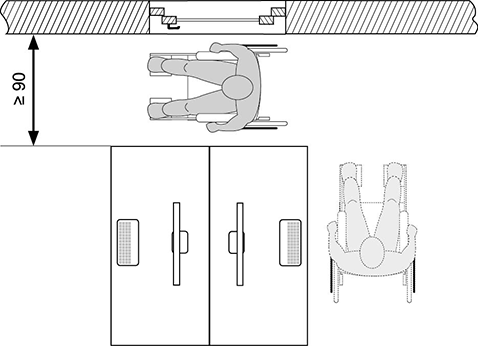

(1) Bei der Festlegung der Anordnung und Gestaltung der Fenster, Oberlichter und lichtdurchlässigen Wände sind die besonderen Anforderungen von Beschäftigten mit Behinderungen zu berücksichtigen. Je nach Einbausituation und Auswirkung der Behinderung ist insbesondere auf Wahrnehmbarkeit, Erkennbarkeit, Erreichbarkeit und Nutzbarkeit zu achten.
(2) Für sehbehinderte und blinde Beschäftigte sind Gefährdungen durch geöffnete Fensterflügel im Aufenthaltsbereich oder im Bereich von Verkehrswegen, z. B. durch eine Begrenzung des Öffnungswinkels oder eine Absperrung des Öffnungsbereiches, während der Öffnungsdauer zu vermeiden. (ASR A1.6 Punkt 4.1.1 Absatz 4)
(3) Bedienelemente von Fenstern und Oberlichtern (z. B. Griffe oder Kurbeln bei Handbetätigung und Taster oder Schalter bei Kraftbetätigung), die von Beschäftigten mit Behinderungen benutzt werden müssen, sind je nach Auswirkung der Behinderung gemäß den Absätzen 4 bis 7 wahrnehmbar, erkennbar, erreichbar und nutzbar zu gestalten.
(4) Wahrnehmbarkeit und Erkennbarkeit der Funktion der Bedienelemente sind gegeben, wenn sie für Beschäftigte mit Sehbehinderung visuell kontrastierend und für blinde Beschäftigte taktil erfassbar gestaltet sind.
(5) Erreichbarkeit der Bedienelemente ist gegeben, wenn für kleinwüchsige Beschäftigte, für Beschäftigte, die einen Rollstuhl benutzen und für Beschäftigte deren Hand-/Arm-Motorik eingeschränkt ist, Bedienelemente in einer Höhe von 0,85 bis 1,05 m angeordnet sind. Für Beschäftigte, die einen Rollstuhl benutzen, müssen Bedienelemente so angeordnet sein, dass bei seitlicher Anfahrbarkeit ein Gang mit einer Breite von mindestens 0,90 m vorhanden ist (Abb. 1).

Abb. 1: Mindestbreite bei seitlicher Anfahrbarkeit (Maß in cm)
(6) Nutzbarkeit der Bedienelemente für handbetätigte Fenster und Oberlichter:
(7) Nutzbarkeit der Bedienelemente für kraftbetätigte Fenster und Oberlichter ist gegeben, wenn für Beschäftigte mit Einschränkungen der Hand-/Arm-Motorik die aufzubringende Kraft für die Bedienung der Schalter und Taster 5 N nicht überschreitet.
(8) Sofern die Maßnahmen nach den Absätzen 4 bis 7 nicht geeignet sind, die Bedienelemente von Fenstern und Oberlichtern zu benutzen, sollen Fernsteuerungen (z. B. Fernbedienungen) eingesetzt werden.
(9) Werden akustische oder optische Warnsignale als Schutzmaßnahme gegen mechanische Gefährdungen beim Öffnen und Schließen von kraftbetätigten Fenstern und Oberlichtern eingesetzt, ist für sehbehinderte und blinde Beschäftigte sowie für Beschäftigte mit Hörbehinderung das Zwei-Sinne-Prinzip anzuwenden. (ASR A1.6 Punkt 4.1.2 Absatz 1, 3. Spiegelstrich)
(10) Die Kennzeichnung durchsichtiger, nicht strukturierter Flächen von lichtdurchlässigen Wänden muss auch für Beschäftigte, die einen Rollstuhl benutzen und für kleinwüchsige Beschäftigte aus ihrer Augenhöhe erkennbar sein. Diese Kennzeichnung kann z. B. aus 8 cm breiten durchgehenden Streifen bestehen, die in einer Höhe von 40 bis 70 cm über dem Fußboden angebracht sind. Für Beschäftigte mit Sehbehinderung ist die Kennzeichnung visuell kontrastierend zu gestalten. (ASR A1.6 Punkt 4.3 Absatz 1)